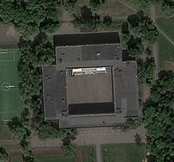
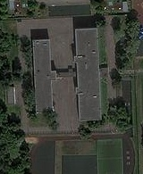
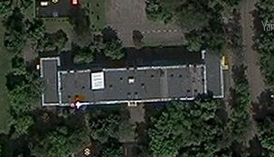
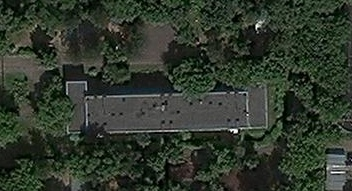
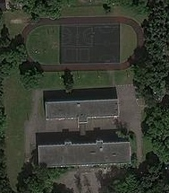
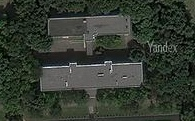
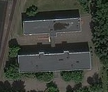

<!DOCTYPE html>
<html>

<head>
    <title>GIS-Service</title>
    <meta charset="UTF-8">
    <link rel="stylesheet" type="text/css" href="./libs/leaflet.css">
    <link rel="stylesheet" type="text/css" href="./libs/leaflet-measure.css">
    <link rel="stylesheet" type="text/css" href="./css/style.css">

    <script src="./libs/leaflet.js"></script>
    <script src="./libs/leaflet-measure.js"></script>
    <script src="http://api-maps.yandex.ru/2.1/?lang=ru-RU" type="text/javascript"></script>
    <script src="./libs/Yandex.js"></script>
    <!-- <script src="./libs/script.js"></script> -->

</head>

<body>
    <div id="map"></div>
    <!-- Start New Code -->
    <script src="./data/Vector/GJtochka.js"></script>
    <script src="./data/Vector/GJline.js"></script>
    <script src="./data/Vector/GJpole.js"></script>
 
    


    <!-- End New Code -->
    <script>
        var bmURL = 'https://api.mapbox.com/styles/v1/{id}/tiles/{z}/{x}/{y}?access_token=pk.eyJ1IjoibWFwYm94IiwiYSI6ImNpejY4NXVycTA2emYycXBndHRqcmZ3N3gifQ.rJcFIG214AriISLbB6B5aw',
            bm = L.tileLayer(bmURL, {
                id: 'mapbox/streets-v11'
            });

        var OSM = L.tileLayer('https://b.tile.openstreetmap.org/{z}/{x}/{y}.png', {
                attribution: 'OSM'
            }),
            WMmap = L.tileLayer('https://maps.wikimedia.org/osm-intl/{z}/{x}/{y}.png', {
                attribution: 'Wikimedia map'
            });

        var gsat = L.tileLayer('http://{s}.google.com/vt/lyrs=s&x={x}&y={y}&z={z}', {
            maxZoom: 20,
            subdomains: ['mt0', 'mt1', 'mt2', 'mt3']
        });

        var ukrcad = L.tileLayer.wms("http://map.land.gov.ua/geowebcache/service/wms", {
            format: 'image/png',
            transparent: true,
            layers: 'kadastr'
        });

        // 
        var Aicn = L.Icon.extend ({
            options: {iconSize: [32, 32],
                      iconAnchor: [16, 32],
                      popupAnchor: [0, -20]
                     }                 
        });

        var AicnReg = [new Aicn({iconUrl: './data/Icon/red.png'}),
                       new Aicn({iconUrl: './data/Icon/green.png'}),
                       new Aicn({iconUrl: './data/Icon/blue.png'})
                       
                    
        ];


        
        

         
        var schoolLayer = L.geoJSON(school, {pointToLayer: function(feature, latIng) {
            var floor = feature.properties.floor;
            floor == 2 ? icn = AicnReg[0]:
            floor == 3 ? icn = AicnReg[1]:  
            icn = AicnReg[2];
                return L.marker(latIng, {icon: icn})
             }
        })

      

        
        .bindPopup(function(school) {
            var Fschool = '';
            
            if (school.feature.properties.name == 'Школа 1516') {
                Fschool = '<br><a target="_blank" href="https://yandex.ru/maps/213/moscow/?ll=37.831886%2C55.816912&mode=search&oid=1000322150&ol=biz&sll=37.832549%2C55.824422&sspn=0.038780%2C0.011861&text=%D0%A8%D0%BA%D0%BE%D0%BB%D0%B0%201516%20%D0%B3%D0%BE%D0%BB%D1%8C%D1%8F%D0%BD%D0%BE%D0%B2%D0%BE&z=15.81">Открыть на Yandex картах</a></button>';
            }
            if (school.feature.properties.name == 'Школа 1598') {
                Fschool = '<br><a target="_blank" href="https://yandex.ru/maps/213/moscow/?ll=37.828003%2C55.823997&mode=search&oid=1112844967&ol=biz&sctx=ZAAAAAgBEAAaKAoSCW73cp8cp0JAERbdek0PvktAEhIJlXQMAMDOxj8RraMqTwUmrD8iBQABAgQFKAowADiOlajt%2FpuRuwlA%2BJEHSABVzczMPlgAagJydXAAnQHNzEw9oAEAqAEAvQGdtKuMwgEFp9XSkgQ%3D&sll=37.828003%2C55.823997&sspn=0.025585%2C0.007826&text=%D1%88%D0%BA%D0%BE%D0%BB%D0%B0%201598%20%D0%B3%D0%BE%D0%BB%D1%8C&z=16.8">Открыть на Yandex картах</a>';
            }
            if ((school.feature.properties.name == 'Школа 1078') && (school.feature.properties.floor == 3)) {
                Fschool = '<br><a target="_blank" href="https://yandex.ru/maps/213/moscow/search/%D0%A8%D0%BA%D0%BE%D0%BB%D0%B0%201078%20%D0%B3%D0%BE%D0%BB%D1%8C%D1%8F%D0%BD%D0%BE%D0%B2%D0%BE/?ll=37.814565%2C55.818877&sll=37.831886%2C55.816912&sspn=0.019436%2C0.015408&z=14.81">Открыть на Yandex картах</a>';
            } else if (school.feature.properties.name == 'Школа 1078')
                Fschool = '<br><a target="_blank" href="https://yandex.ru/maps/213/moscow/search/%D0%A8%D0%BA%D0%BE%D0%BB%D0%B0%201078%20%D0%B3%D0%BE%D0%BB%D1%8C%D1%8F%D0%BD%D0%BE%D0%B2%D0%BE/?ll=37.814565%2C55.818877&sll=37.831886%2C55.816912&sspn=0.019436%2C0.015408&z=14.81">Открыть на Yandex картах</a>';

            if ((school.feature.properties.name == 'Школа 1352') && (school.feature.properties.floor == 4)) {
                Fschool = '<br><a target="_blank" href="https://yandex.ru/maps/213/moscow/?ll=37.804078%2C55.813276&mode=search&oid=1035568215&ol=biz&sll=37.814565%2C55.818877&sspn=0.038871%2C0.030815&text=%D0%A8%D0%BA%D0%BE%D0%BB%D0%B0%201352%20%D0%B3%D0%BE%D0%BB%D1%8C%D1%8F%D0%BD%D0%BE%D0%B2%D0%BE&z=16.81">Открыть на Yandex картах</a>';
            } else if ((school.feature.properties.floor == 3) && (school.feature.properties.id == 6)) {
                Fschool = '<br><a target="_blank" href="https://yandex.ru/maps/213/moscow/?ll=37.804078%2C55.813276&mode=search&oid=1035568215&ol=biz&sll=37.814565%2C55.818877&sspn=0.038871%2C0.030815&text=%D0%A8%D0%BA%D0%BE%D0%BB%D0%B0%201352%20%D0%B3%D0%BE%D0%BB%D1%8C%D1%8F%D0%BD%D0%BE%D0%B2%D0%BE&z=16.81">Открыть на Yandex картах</a>';
            } else if (school.feature.properties.name == 'Школа 1352') {
                Fschool = '<br><a target="_blank" href="https://yandex.ru/maps/213/moscow/?ll=37.804078%2C55.813276&mode=search&oid=1035568215&ol=biz&sll=37.814565%2C55.818877&sspn=0.038871%2C0.030815&text=%D0%A8%D0%BA%D0%BE%D0%BB%D0%B0%201352%20%D0%B3%D0%BE%D0%BB%D1%8C%D1%8F%D0%BD%D0%BE%D0%B2%D0%BE&z=16.81">Открыть на Yandex картах</a>';
            }
           
            return '<b>Заведение: </b>' + school.feature.properties.name +
                   '<br><b>Этажность: </b>' + school.feature.properties.floor +
                   Fschool
                
            
        });

         
      

        var streetLayer = L.geoJSON(street, {style: function(feature) {
            return {color: '#461B12',
                    weight: 5 
                   }
                }
        });


        var poleLayer = L.geoJSON(pole, {style: function(feature) {
            var c = '#46f22c',
            
                fc = '#a5ea83';
                if (feature.properties.type == 'Футбольное') {
                    c = '#eaec1d';
                    fc = '#faffa6';
                }
                return {color: c,
                        fillOpacity: 0.75,
                        fillColor: fc,
                       }
                    
                       
        }});

        
        

        // 
        var ya = new L.Yandex();

        function traffic() {
            var actualProvider = new ymaps.traffic.provider.Actual({}, {
                infoLayerShow: true
            });
            actualProvider.setMap(this._yandex);
        };

        var yatr = new L.Yandex('overlay')
            .on('load', traffic)

        var baselayers = {
            "OpenStreetMaps": OSM,
            "Wikimapia": WMmap,
            "Google": gsat,
            "Yandex": ya
        };

        var overlayLayers = {
            "Yandex - пробки": yatr,
            "UA-ПКК": ukrcad,
            "Гольяново - Школа": schoolLayer,
            "Гольяново - Улица": streetLayer,
            "Гольяново - Поле": poleLayer
        };

        var measureControl = new L.Control.Measure({
            primaryLengthUnit: 'meters',
            secondaryLengthUnit: 'kilometers',
            primaryAreaUnit: 'sqmeters',
            secondaryAreaUnit: 'hectares',
            activeColor: '#ad3232',
            completedColor: '#fc0303',
            decPoint: ',',
            thousandsSep: ' '
        });

        var mymap = L.map('map', {
            center: [55.878152, 37.685423],
            zoom: 15,
            layers: [OSM],
        });

        

        var msrControl = new L.Control.Measure({
            primaryLengthUnit: 'meters',
            secondaryLengthUnit: 'kilometers',
            primaryAreaUnit: 'sqmeters',
            secondaryAreaUnit: 'hectares',
            localization: 'ru',
            activeColor: '#3c9c69',
            completedColor: '#224b2d',
            decPoint: ',',
            thousandsSep: ' '
        });

        L.control.layers(baselayers, overlayLayers).addTo(mymap);
        L.control.scale({
            imperial: false,
            maxWidth: 200
        }).addTo(mymap);

        measureControl.addTo(mymap);
    </script>
</body>

</html>